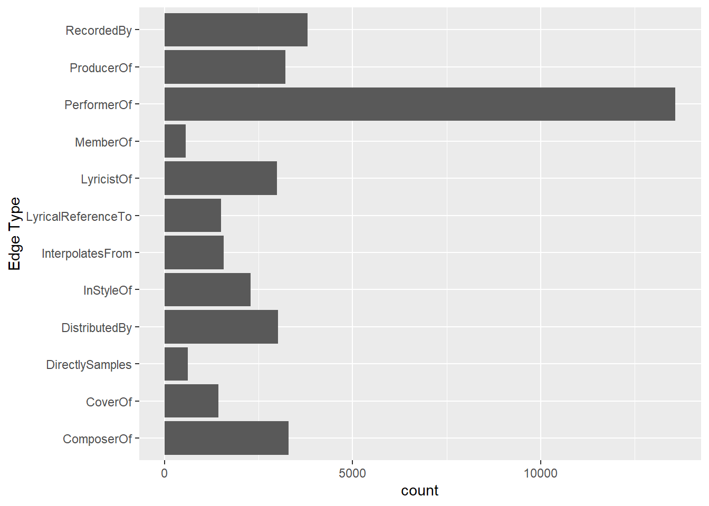
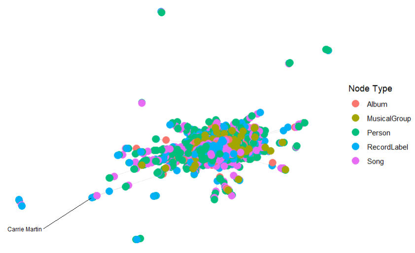
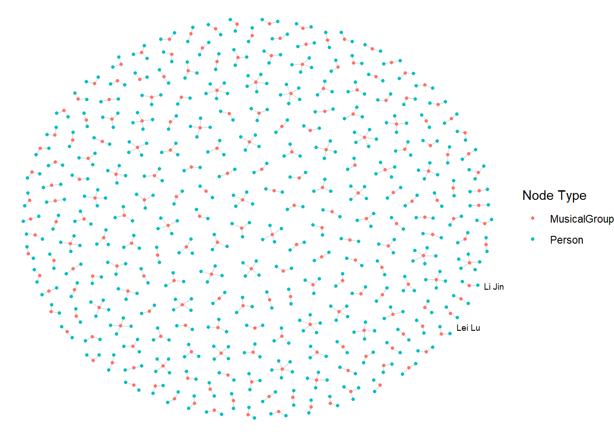
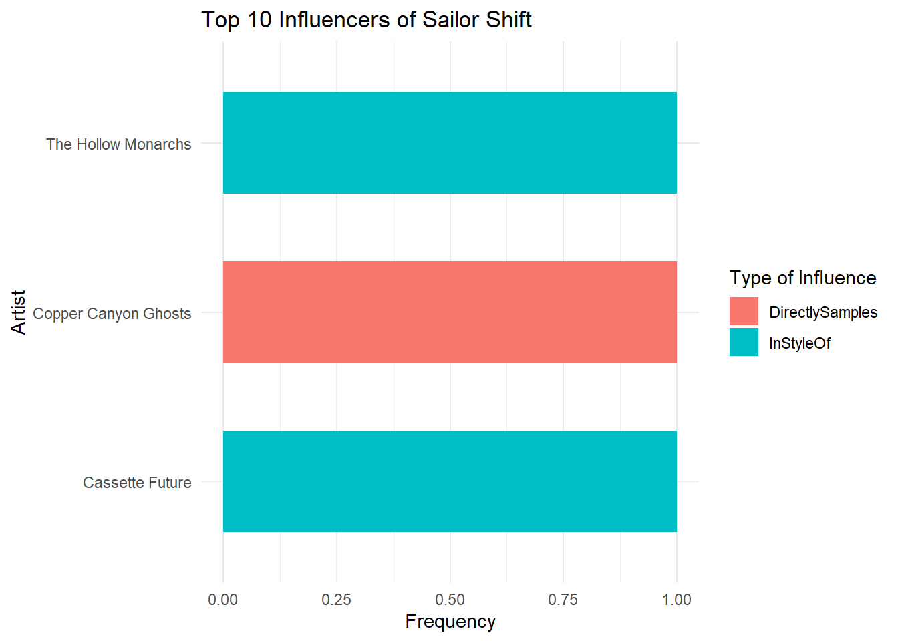
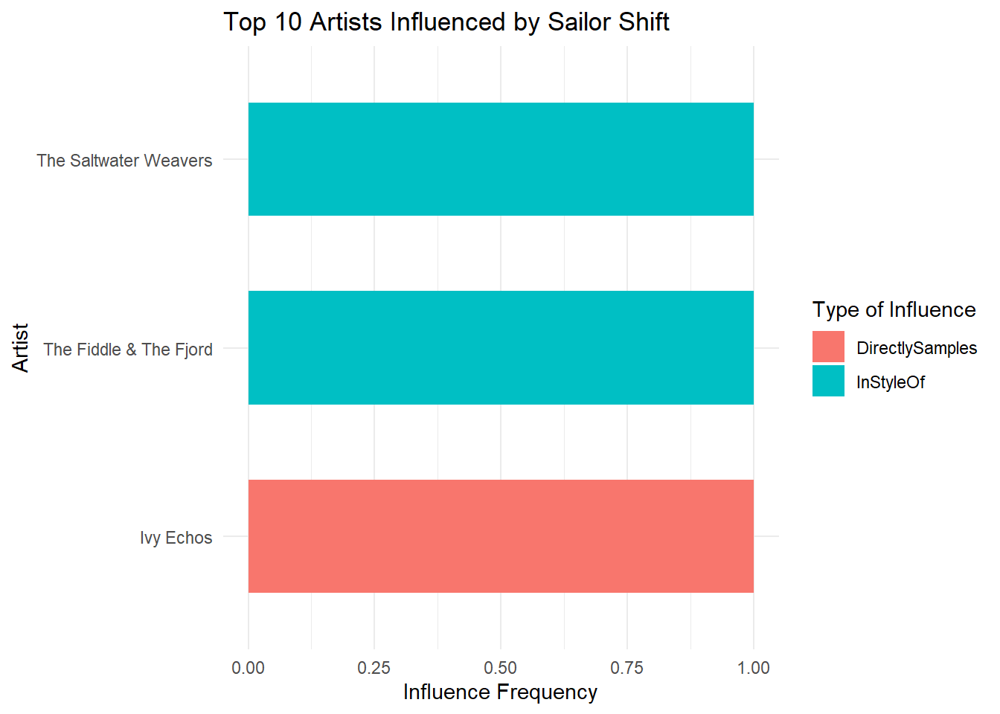

pacman::p_load(tidyverse, jsonlite,
tidygraph, ggraph)Take-home Exercise 2
Mini Case 1
1 Introduction
1.1 Getting Started
For the purpose of this exercise, four R packages will be used. They are tidyverse, jsonlite, tidygraph and ggraph.
In the code chunk below, p_load() of pacman package is used to load the R packages into R environemnt.
1.2 Importing Kownledge Graph Data
For the purpose of this exercise, MC1_graph.json file will be used. Before getting started, you should have the data set in the data sub-folder.
In the code chunk below, fromJSON() of jsonlite package is used to import MC1_graph.json file into R and save the output object
kg <- fromJSON("data/MC1_graph.json")1.2.1 Inspect structure
Before preparing the data, it is always a good practice to examine the structure of kg object.
In the code chunk below str() is used to reveal the structure of kg object.
str(kg, max.level = 1)List of 5
$ directed : logi TRUE
$ multigraph: logi TRUE
$ graph :List of 2
$ nodes :'data.frame': 17412 obs. of 10 variables:
$ links :'data.frame': 37857 obs. of 4 variables:1.3 Extracting the edges and nodes tables
Next, as_tibble() of tibble package package is used to extract the nodes and links tibble data frames from kg object into two separate tibble data frames called nodes_tbl and edges_tbl respectively.
nodes_tbl <- as_tibble(kg$nodes)
edges_tbl <- as_tibble(kg$links) 1.3.1 Initial EDA
It is time for us to apply appropriate EDA methods to examine the data.
In this code chunk below, ggplot2 functions are used the reveal the frequency distribution of Edge Type field of edges_tbl.
ggplot(data = edges_tbl,
aes(y = `Edge Type`)) +
geom_bar()
On the other hands, code chunk below uses ggplot2 functions to reveal the frequency distribution of Node Type field of nodes_tbl.
ggplot(data = nodes_tbl,
aes(y = `Node Type`)) +
geom_bar()
1.4 Creating Knowledge Graph
1.4.1 Mapping from node id to row index
Before we can go ahead to build the tidygraph object, it is important for us to ensures each id from the node list is mapped to the correct row number. This requirement can be achive by using the code chunk below.
id_map <- tibble(id = nodes_tbl$id,
index = seq_len(
nrow(nodes_tbl)))1.4.2 Map source and target IDs to row indices
Next, we will map the source and the target IDs to row indices by using the code chunk below.
edges_tbl <- edges_tbl %>%
left_join(id_map, by = c("source" = "id")) %>%
rename(from = index) %>%
left_join(id_map, by = c("target" = "id")) %>%
rename(to = index)1.4.3 Filter out any unmatched (invalid) edges
Lastly, the code chunk below will be used to exclude the unmatch edges.
edges_tbl <- edges_tbl %>%
filter(!is.na(from), !is.na(to))1.4.4 Creating tidygraph
Lastly, tbl_graph() is used to create tidygraph’s graph object by using the code chunk below.
graph <- tbl_graph(nodes = nodes_tbl,
edges = edges_tbl,
directed = kg$directed)You might want to confirm the output object is indeed in tidygraph format by using the code chunk below.
class(graph)[1] "tbl_graph" "igraph" 1.5 Visualising the knowledge graph
In this section, we will use ggraph’s functions to visualise and analyse the graph object.
Several of the ggraph layouts involve randomisation. In order to ensure reproducibility, it is necessary to set the seed value before plotting by using the code chunk below.
set.seed(1234)1.5.1 Visualising the whole graph
In the code chunk below, ggraph functions are used to visualise the whole graph.

# ggraph(graph, layout = "fr") +
# geom_edge_link(alpha = 0.3,
# colour = "gray") +
# geom_node_point(aes(color = `Node Type`),
# size = 4) +
# geom_node_text(aes(label = name),
# repel = TRUE,
# size = 2.5) +
# theme_void()Notice that the whole graph is very messy and we can hardy discover any useful patterns. This is always the case in graph visualisation and analysis. In order to gain meaningful visual discovery, it is always useful for us to looking into the details, for example by plotting sub-graphs.
1.5.2 Visualising the sub-graph
In this section, we are interested to create a sub-graph base on MemberOf value in Edge Type column of the edges data frame.
1.5.2.1 Filtering edges to only “MemberOf”
graph_memberof <- graph %>%
activate(edges) %>%
filter(`Edge Type` == "MemberOf")1.5.2.2 Extracting only connected nodes (i.e., used in these edges)
used_node_indices <- graph_memberof %>%
activate(edges) %>%
as_tibble() %>%
select(from, to) %>%
unlist() %>%
unique()1.5.2.3 Keeping only those nodes
graph_memberof <- graph_memberof %>%
activate(nodes) %>%
mutate(row_id = row_number()) %>%
filter(row_id %in% used_node_indices) %>%
select(-row_id) # optional cleanup1.5.2.4 Plotting the sub-graph
ggraph(graph_memberof,
layout = "fr") +
geom_edge_link(alpha = 0.5,
colour = "gray") +
geom_node_point(aes(color = `Node Type`),
size = 1) +
geom_node_text(aes(label = name),
repel = TRUE,
size = 2.5) +
theme_void()
Notice that the sub-graph above is very clear and the relationship between musical group and person can be visualise easily.
1.6 Tasks and Questions:
1.7 1a. Who influenced Sailor Shift?
To understand Sailor Shift’s musical inspirations and early career influences, we analyzed all incoming edges directed to her node labeled as "InStyleOf", "CoverOf", and "DirectlySamples".
A stacked bar chart was created to visualize the top 10 artists who most influenced Sailor Shift, categorized by type of influence. This analysis revealed that her style was shaped by a variety of artists, with influences ranging from stylistic imitation to direct sampling and covers.
This suggests that Sailor’s artistic development was not limited to a single mentor or genre, but instead built upon a diverse foundation of musical inspirations.
sailor_id <- nodes_tbl %>% filter(name == "Sailor Shift") %>% pull(id)
in_edges <- edges_tbl %>%
filter(target == sailor_id,
`Edge Type` %in% c("InStyleOf", "CoverOf", "DirectlySamples")) %>%
left_join(nodes_tbl %>% select(id, name), by = c("source" = "id"))
in_edges %>%
filter(name != "0") %>%
count(name, `Edge Type`, sort = TRUE) %>%
group_by(name) %>%
mutate(total = sum(n)) %>%
ungroup() %>%
slice_max(order_by = total, n = 10) %>%
ggplot(aes(x = reorder(name, total), y = n, fill = `Edge Type`)) +
geom_col(width = 0.6) +
coord_flip() +
labs(title = "Top 10 Influencers of Sailor Shift",
x = "Artist", y = "Frequency",
fill = "Type of Influence") +
theme_minimal()
1.8 1b. Who did Sailor Shift influence?
To assess Sailor Shift’s direct impact on the music community, we examined all outgoing edges from her node, focusing again on "InStyleOf", "CoverOf", and "DirectlySamples".
The top 10 recipients of her influence were visualized in a stacked bar chart, highlighting the nature and frequency of the influence relationships. This illustrates the artists who either borrowed stylistically from Sailor or engaged with her work directly through covers or sampling.
The visualization shows that Sailor played an active and multifaceted role in shaping the musical directions of several notable artists. Her influence extended into both Oceanus Folk and adjacent genres, establishing her as a key figure in the evolving music landscape.
sailor_id <- nodes_tbl %>% filter(name == "Sailor Shift") %>% pull(id)
out_edges <- edges_tbl %>%
filter(source == sailor_id,
`Edge Type` %in% c("InStyleOf", "CoverOf", "DirectlySamples")) %>%
left_join(nodes_tbl %>% select(id, name), by = c("target" = "id"))
out_edges %>%
filter(name != "0") %>%
count(name, `Edge Type`, sort = TRUE) %>%
group_by(name) %>%
mutate(total = sum(n)) %>%
ungroup() %>%
slice_max(order_by = total, n = 10) %>%
ggplot(aes(x = reorder(name, total), y = n, fill = `Edge Type`)) +
geom_col(width = 0.6) +
coord_flip() +
labs(
title = "Top 10 Artists Influenced by Sailor Shift",
x = "Artist", y = "Influence Frequency",
fill = "Type of Influence"
) +
theme_minimal()
1.9 1c. How did Sailor Shift influence collaborators of the broader Oceanus Folk community?
1.9.1 Analytical Approach
To understand Sailor Shift’s extended influence, we examined not only the artists directly influenced by her, but also those who were influenced indirectly via her collaborators. Specifically, we traced all edges where Sailor was the source (direct influence), and then followed the influence paths of her direct collaborators (second-degree influence).
1.9.2 Key Findings
- Sailor Shift directly influenced 3 artists through collaborations or stylistic influence.
- These collaborators subsequently influenced 2 additional artists.
- In total, her influence extends across 6 unique individuals through two layers.
- Among the second-degree influenced artists, none were explicitly labeled under the “Oceanus Folk” genre (suggesting that her influence transcended genres).
1.9.3 Insights
Although none of the second-degree influenced artists were tagged as “Oceanus Folk”, Sailor’s influence propagated through her collaborators to shape a broader group of artists. This highlights her role as a catalyst within the network, enabling stylistic diffusion even when the final recipients fall outside her original genre.
This pattern suggests that Sailor served as a bridge between Oceanus Folk and other genres, allowing her influence to transcend traditional boundaries and seed innovation across the music ecosystem.